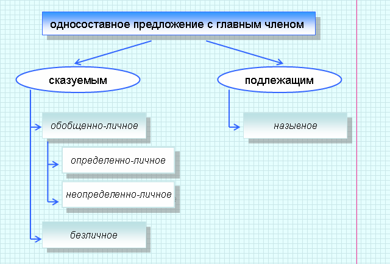

|
Односоставное предложение имеет только один из главных членов. |

|
В определённо-личных предложениях главный член выражен глаголом в форме 1 и 2 лица единственного и множественного числа изъявительного наклонения (в настоящем и в будущем времени), и в повелительном наклонении; производитель действия определен и может быть назван личными местоимениями 1 и 2 лица я, ты, мы, вы |  |
Иди
сюда. Иду. Пойдемте в кино. |
|
В неопределённо-личных предложениях главный член выражается глаголом в форме 3 лица множественного числа (настоящего и будущего времени в изъявительном наклонении и в повелительном наклонении), формой множественного числа прошедшего времени изъявительного наклонения и аналогичной формой условного наклонения глагола. Производитель действия в этих предложениях неизвестен или неважен | |
В дверь стучат /
постучали. Пусть стучат. Если бы стучали громче, я бы услышал. |
|
В обобщенно-личных
предложениях говорится о действии, которое
приписывается всем и каждому в отдельности. Обобщенно личными могут
быть ОЛП и НЛП Такие предложения представлены в пословицах, поговорках, крылатых фразах, афоризмах. |
|
Любишь кататься — люби
и саночки возить. Цыплят по осени считают. |
|
Главный член безличного предложения может быть выражен безличным глаголом (Так всегда светает в Москве ранней весной), личным глаголом в безличном употреблении, т.е. в форме 3 лица единственного числа настоящего (будущего) времени или в форме среднего рода прошедшего времени (Не дрогнет ни одна ветка.От пруда потянуло холодом), инфинитивом (Быть дождю), глаголом - связкой в сочетании с наречием (Стало жарко), вспомогательным глаголом в безличном употреблении в сочетании с инфинитивом (Мне приходилось ночевать в стогах в октябре). |
 |
безличным глаголом, единственная синтаксическая функция которого — быть главным членом безличных односоставных предложений | |
Холодает / холодало / будет холодать |
|
личным глаголом в безличной форме | |
Темнеет. |
|
глаголом быть и словом нет в отрицательных предложениях | |
Ветра не было / нет. |
|
модальный или фазисный глагол в безличной форме + инфинитив | |
За окном стало темнеть. |
|
глагол-связка быть в безличной форме (в наст. вр. в нулевой форме) + наречие + инфинитив | |
Жаль / было жаль
расставаться с друзьями. Пора собираться в дорогу. |
|
глагол-связка в безличной форме + наречие | |
Было жаль старика. На улице становилось свежо. |
|
глагол-связка в безличной форме + краткое страдательное причастие | |
В комнате было накурено. |
|
Назывное предложение − это односоставное предложение с главным членом-подлежащим. В назывных предложениях сообщается о существовании и наличии предмета. Главный член назывного предложения выражается формой И. п. существительного | |
Бессонница. Гомер. Тугие паруса (О. Э. Мандельштам). |
|
В состав назывных предложений могут входить указательные частицы вон, вот, а для введения эмоциональной оценки — восклицательные частицы ну и, какой, вот так | |
Какая
погода! Ну и дождь! Вот так гроза! |
|
Распространителями назывного предложения могут быть
согласованные и
несогласованные определения Если распространителем является обстоятельство места, времени, то такие предложения является двусоставным неполным |
|
Поздняя
осень. Скоро осень. Сравните: Скоро наступит осень. |
|
Осложнение предложения возникает при наличии членов предложения и не являющихся членами предложения единиц с относительной смысловой и интонационной самостоятельностью. |
 |
однородные члены |
|
обособленные члены (в том числе уточняющие, пояснительные, присоединительные, причастный, деепричастный, сравнительный оборот) |
|
вводные слова и предложения, вставные конструкции |
|
обращения |
|
Однородными
называются два или несколько членов
предложения, связанных
друг с другом сочинительной или бессоюзной связью и выполняющих
одинаковую синтаксическую функцию. Однородные члены равноправны, не зависят друг от друга. |
|
Однородные члены могут иметь одинаковое или разное морфологическое выражение | |
Он часто был простужен и лежал неделями в кровати. |
|
они используются для перечисления разновидностей предметов, характеризуя их с одной стороны | |
На столе разбросаны красные, синие, зеленые карандаши. |
|
они перечисляют признаки одного предмета, оцениваемые положительно или отрицательно, т. е. синонимичные эмоционально | |
Это была холодная, снежная, скучная пора. |
|
последующее определение раскрывает содержание предыдущего: | |
Перед ним открылись новые, неведомые горизонты. |
|
первое определение — прилагательное, второе — причастный оборот | |
На столе лежал маленький, неразборчиво подписанный конверт. |
|
при обратном порядке слов (инверсии) | |
На столе лежал портфель — большой, кожаный. |
|
При однородных членах могут быть обобщающие слова — слова с более общим по отношению к однородным членам значением. |
|
Если обобщающее слово стоит перед рядом однородных членов, перед ними ставится двоеточие | |
Все изменилось: и мои планы, и мое настроение. |
|
Если обобщающее слово стоит после ряда однородных членов, перед ним ставится тире | |
И мои планы, и мое настроение − все изменилось. |
|
Если обобщающее слово стоит перед однородными членами, а после них предложение продолжается, то перед однородными членами ставится двоеточие, а после них − тире | |
И все это: и река, и поле − напоминало мне детство. |
|
Обособленными
называются
второстепенные члены предложения, выделяемые
по смыслу, интонационно и пунктуационно. Обособленными могут быть любые члены предложения. |
|
Обособленные определения могут быть согласованными и несогласованными, распространенными и нераспространенными | |
Этот человек, тощий, с палочкой в руке, был мне неприятен. |
|
Обособленные обстоятельства чаще бывают выражены деепричастиями и деепричастными оборотами |
|
Размахивая руками, он что-то быстро говорил. |
|
Обособляются также обстоятельства, выраженные существительным с предлогом несмотря на | |
Несмотря на все старания, я никак не мог уснуть. |
|
Обособление других обстоятельств зависит от намерения автора: они обычно обособляются, если им придают особое значение или, наоборот, рассматривают как попутное замечание. Особенно часто обособляются обстоятельства с предлогами благодаря, вследствие, ввиду, за неимением, согласно, по случаю, в силу, вопреки | |
Вопреки прогнозу, погода стояла солнечная. |
|
Из числа дополнений бывают обособленными очень немногие, а именно дополнения с предлогами кроме, помимо, исключая, сверх, помимо, включая | |
Кроме него, пришло еще пять человек. |
|
Уточняющим называется член предложения, отвечающий на тот же вопрос, что и другой член, после которого он стоит, и служащий для уточнения (обычно он сужает объем понятия, выражаемого уточняемым членом). Уточняющие члены могут быть распространенными. Уточняющими могут быть любые члены предложения | |
Его
сообразительность, вернее быстрота
реакции, поразила меня
(подлежащее). Внизу, в тени, шумела река (обстоятельство). |
|
Обращение — это слово или словосочетание, называющее лицо (реже — предмет), к которому обращена речь. |
|
Дорогая
внучка, почему ты мне
стала редко звонить? Ожидающие рейс из Сочи , пройдите в зону прилета. Опять я ваш, о юные друзья! (название элегии А. С. Пушкина). |
|
Петя! Немедленно иди сюда! (предложение односоставное определенно-личное, распространенное, осложнено обращением). |
|
Вводные слова и словосочетания показывают отношение говорящего к высказываемой мысли или к способу ее выражения. Они не являются членами предложения, в произношении выделяются интонационно и пунктуационно. |
|
чувства, эмоции: к сожалению, к досаде, к ужасу, к счастью, к удивлению, на радость, странное дело, не ровен час, спасибо еще и др. | |
К счастью, с утра погода наладилась. |
|
оценка говорящим степени достоверности сообщаемого: конечно, несомненно, пожалуй, возможно, кажется, должно быть, разумеется, в самом деле, в сущности, по существу, по сути, надо полагать, думаю и др. | |
Пожалуй, погода сегодня будет хорошая. |
|
источник сообщаемого: по-моему, помнится, мол, дескать, по словам, говорят, по мнению и др. | |
По-моему, он предупреждал об отъезде. |
|
связь мыслей и последовательность их изложения: во-первых, наконец, далее, наоборот, напротив, главное, таким образом, с одной стороны, с другой стороны и др. | |
С одной стороны, предложение интересное, с другой — опасное. |
|
способ оформления мыслей: словом, так сказать, иначе/вернее/точнее говоря, другими словами и др. | |
Он пришел вечером, а точнее говоря, почти ночью. |
|
обращение к собеседнику с целью привлечения внимания: скажем, допустим, поймите, извините, вообразите, понимаешь ли, поверьте и др. |
|
Я этого, поверьте, не знал. |
|
оценка меры того, о чем говорится: самое большее, самое меньшее, по крайней мере , без преувеличений | |
Он говорил со мной, по крайней мере, как большой начальник. |
|
степень обычности: бывает, бывало, случается, по обыкновению | |
Он, по обыкновению, сел в углу комнаты. |
|
экспрессивность: кроме шуток, честно говоря, между нами будет сказано , смешно сказать и др. | |
Я, честно говоря, сильно устал. |
 |
Необходимо различать вводные слова и омонимичные им союзы, наречия, слова именных частей речи. |
|
Слово однако может быть вводным, но может быть противительным союзом (= но), используемым для связи однородных членов, частей сложного предложения или предложений в тексте | |
Дождь, однако, зарядил надолго.
(вводное слово) Ошибки негрубые, однако неприятные (союз, можно заменить на но) |
|
Слово наконец является вводным, если стоит в перечислительном ряду (часто с вводными словами во-первых, во-вторых и т. д.), и является наречием, если по значению равно наречному выражению в конце концов | |
Я вышел наконец к просеке.
(наречие) Во-первых, я болен, во-вторых, устал и, наконец, просто не хочу идти туда. (вводное слово) |
|
Вводными могут быть не только слова и словосочетания, но и предложения. Вводные предложения выражают те же значения, что и вводные слова, могут вводиться союзами если, как, сколько и др. |
|
Элегантность, я думаю, никогда
не выйдет из моды. (= по-моему) Эта книга, если я не ошибаюсь, вышла в прошлом году. (= по-моему) Прихожу я и — можете себе представить? — никого не застаю дома. (= представьте). |
|
В предложение могут быть введены вставные конструкции, выражающие дополнительное замечание. Вставные конструкции обычно имеют структуру предложения, обособляются скобками или тире и могут иметь иную цель высказывания или интонацию, чем основное предложение. |
|
Наконец (нелегко мне это
далось!
) она разрешила мне приехать. |